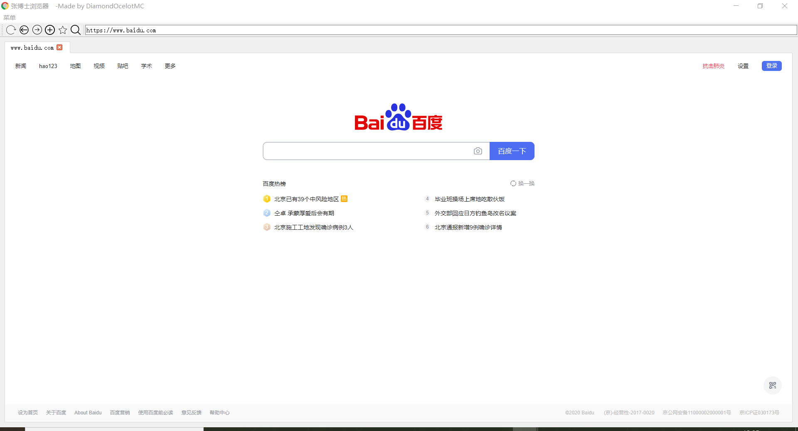

张博士浏览器官方网站
最新版软件内容


注意事项
1.本软件不能安装在带有中文的目录下
软件版本
| 版本号 | 发布时间 | 更新内容 | 支持系统 | 下载地址 |
| 1.0.0 | 2020年6月23日 | 张博士浏览器的第一个版本 | Win10x64 | 微云 Github下载 |
| 1.0.0 | 2020年6月24日 | 张博士浏览器32位版 | Win10x86/x64 | 微云 |
| 1.0.1 | 2020年6月26日 | 修复了部分bug，提高了程序安全性 | Win7x64 Win8x64 Win10x64 | 微云 |
| 1.0.1 | 2020年6月26日 | 修复了部分bug，提高了程序安全性 | Win7x86/x64 Win8x86/x64 Win10x86/x64 | 微云 |
开发人员名单
|
DiamondOcelotMC |